EPC/PPC-CM4-070¶
Version 1.1
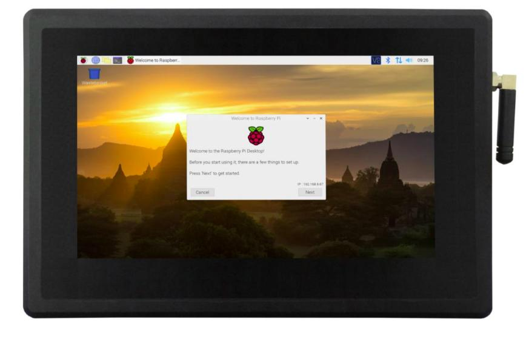
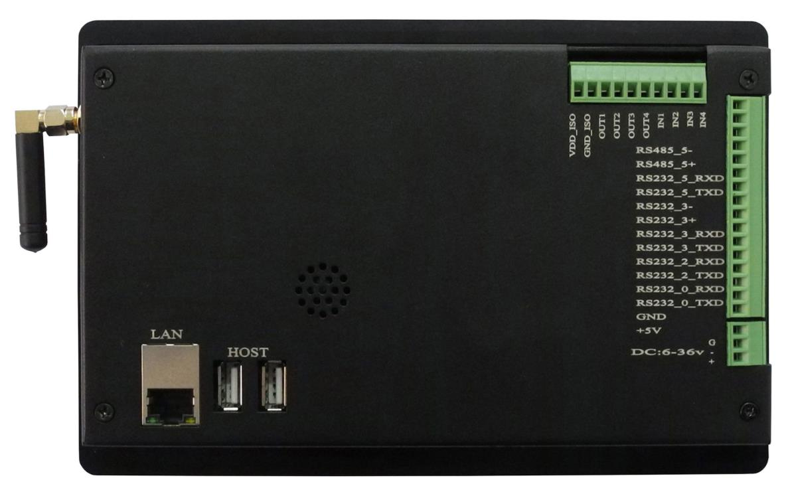
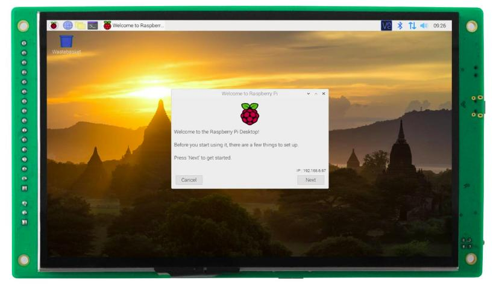
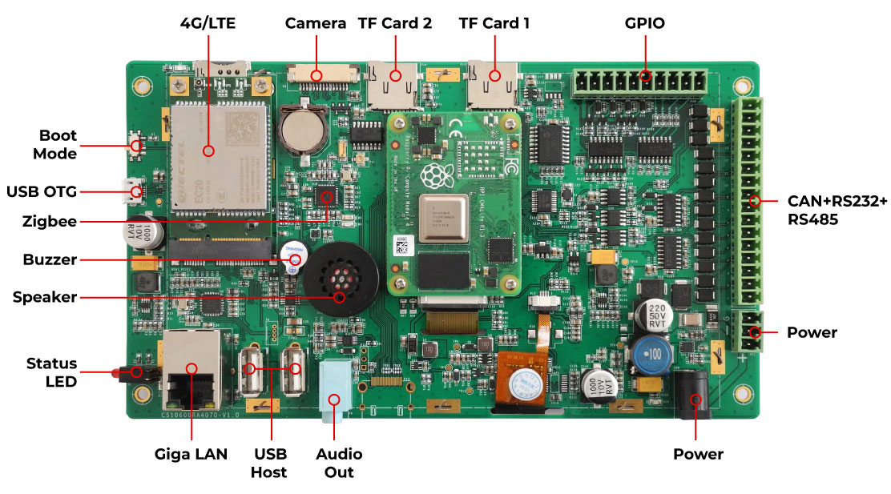
Product Overview¶
The Cortex®-A72 Raspberry Pi® series EPC/PPC-CM4-070 (PN: CS10600RA4070) is a high-quality industrial Pi PC. It features a 7” five-point capacitive touch screen with a resolution of 1024 x 600 pixels and brightness of 500 cd/m2.
It is available both as an embedded solution and as a device hosed in a casing with bezels, thus facilitating different installation options:
Installation on an industrial cabinet
Integration with the existing equipment
The EPC/PPC-CM4-070 industrial Pi PC is based around the powerful Raspberry Pi® Compute Module 4, powered by the Quad Cortex®-A72 processor with a processor speed of 1.5GHz.
Ordering Options¶
Chipsee products can be customized during the ordering process. The product will be shipped with the pre-installed factory defaults if no extra requirements are specified. The table in the Specifications section provides information about the default options bundled with the product.
Note
You can order EPC/PPC-CM4-070 from the official Chipsee Store or from your nearest distributor.
Pi® CM4 Module¶
The Pi® Compute Module 4 appears in different versions depending on the size of the DDR4 and eMMC.
The EPC/PPC-CM4-070 industrial Pi PC does not include the CM4 Raspberry Pi® module by default. If you would like to purchase it with a CM4, you can select it at the Chipsee store during the ordering process.
Operating System¶
This product comes with a pre-installed Raspberry Pi OS. Chipsee software engineers have created all the drivers, so every hardware feature is readily available for any standard development tool.
If your project requires a different OS, please Contact us, and we’ll make a customized version that suits your needs.
Optional Features¶
The EPC/PPC-CM4-070 industrial Pi PC does not include the 3G/4G/LTE modules by default. These modules are optional and can be selected at the Chipsee store during the ordering process.
Warning
7 inch CM4 Products Comparision¶
Chipsee provides two 7 inch Industrial Pi PCs, EPC/PPC-CM4-070 and PPC-CM4-070-D, here is the comparison:
Product |
EPC/PPC-CM4-070 |
PPC-CM4-070-D |
|---|---|---|
LAN |
1 x LAN |
2 x LAN |
USB-A |
2 x USB 2.0 |
2 x USB 3.0 |
GPIO |
8 x Optical Isolated GPIO |
6 x Raspberry Pi CPU GPIO (Compatible with Pi GPIO Software Libraries) or 8 x Optical Isolated GPIO |
Connectors |
Distributed on each side |
Mostly on the bottom side |
Dimension |
206 x 135 x 30mm |
188.05 x 123.11 x 33.20mm, new case, small and compact |
Specifications¶
The EPC/PPC-CM4-070 industrial Pi PC offers a broad range of performance and connectivity options for scalable integration, providing expandability according to future needs. Some of the key features are listed in the table below.
EPC/PPC-CM4-070 |
|
|---|---|
CPU |
Raspberry Pi® CM4, CM4 Lite; Quad Cortex-A72 at 1.5GHz |
Storage |
Support for 2 x TF Card3 |
RAM |
2/4/8 GB, Based on CM4 |
eMMC |
16/32 GB, Based on CM4 |
Display |
7” IPS LCD, 1024 x 600 resolution px, brightness 500 cd/m2 |
Touch |
5-point capacitive touch with 1mm Armored Glass |
USB |
2 x USB 2.0 Host, 1 x USB OTG |
LAN |
1 x Channel Giga LAN |
Audio |
3.5mm Audio Out Connector, 2W Speaker Internal |
Buzzer |
Onboard Buzzer, driven by GPIO |
RTC |
Yes, High Accuracy RTC with Lithium Button Coin battery (lithium battery not included) |
RS232 |
Default to 2 x RS232, up to 4 x RS232 |
RS485 |
Default to 2 x RS4851, these 2 x RS485 can be configured as 2 x RS232 |
CAN |
1 x CAN-BUS |
GPIO |
8 Channels, 4 Input, 4 Output |
I2C |
Not Supported |
WiFi/BT |
Supported but depending on the CM4 selected2 |
ZIGBEE |
Onboard Zigbee module, not mounted by default |
HDMI |
Yes |
SATA II |
Not Supported |
3G/4G/LTE |
Supported, not mounted by default |
Camera |
Yes, not mounted by default |
Power Input |
From 6V to 36V |
Current |
420mA Max at 12V |
Power Consumption |
5W Typical |
Working Temperature |
From 0°C to +60°C |
OS |
Raspberry Pi OS |
Dimensions |
CS10600RA4070E: 190 x 108 x 28mm; CS10600RA4070P: 206 x 135 x 30mm |
Weight |
CS10600RA4070E: 400g; CS10600RA4070P: 700g |
Mounting Method |
CS10600RA4070P: Panel, VESA; CS10600RA4070E: Embedded |
- 1
The RS485 circuit controls the Input and Output direction automatically, there’s no need to control it from within the software.
- 2
The default product without the CM4 does not include a Wi-Fi/BT module. You can include a CM4 that has the Wi-Fi/BT module at the Chipsee store during the ordering process.
- 3
Chipsee designed one of the TF card slots for Lite version which have no eMMC. We designed the other one for storage expansion, as the TF card for storage expansion use same pins with WiFi, it can’t be used with WiFi at same time.
Attention
Chipsee does not install a lithium battery by default, as we cannot ship products with batteries. We recommend you buy it locally and install it by yourself. The lithium battery part number is CR1220. Please Contact us if you need help.
Power Input¶
The EPC/PPC-CM4-070 industrial Pi PC can be powered by a wide range of input voltages: From 6V to 36V DC. There are two types of power input connectors. One is a 3 Pin, 3.81mm screw terminal connector, and the other is a 2.1mm DC input head. As shown in the figure below.
{kind=link}
Power Input
Note that the “+” sign represents the positive power input, and it is printed both at the casing and as a silk-screen on the board of the embedded version. The “-” terminal is shorted to the ground.
Power Input Definition |
||
|---|---|---|
Pin Number |
Definition |
Description |
Pin 1 |
Positive Input |
DC Power Positive Terminal |
Pin 2 |
Negative Input |
DC Power Negative Terminal |
Pin 3 |
Ground |
Power System Ground |
Note
The system ground “G” is connected to power negative “-” on board.
Touch Screen¶
The EPC/PPC-CM4-070 industrial Pi PC uses a 5-point capacitive touch with 1mm Armored Glass screen. However, the Raspberry Pi OS supports only One-Point touch.
The figure below shows the capacitive touch screen connected to the motherboard via the FPC connector.
{kind=link}
Capacitive Touch Connector
Attention
A capacitive touch screen is susceptible to power noise and Electromagnetic Radiation (EMR). It may cause LCD ripples or even capacitive touch malfunction. If using a capacitive multi-touch test application, you might notice the touch points float erratically across the display. There are several solutions to this problem:
Use a high-quality Power Adapter Unit (PSU) with low EMR. You can also provide power from a battery.
Make sure that the EPC/PPC-CM4-070 Power Input connector (pin 3) is properly connected to the Power System Ground to provide sufficient EMI shielding and eliminate the problem entirely.
Bad GND problems can also be confirmed by touching pin 3 of the Power Input connector with one hand while operating the capacitive touch screen with the other hand. In this case, the operator’s body acts as the Power System Ground.
Connectivity¶
There are many connectivity options available on the EPC/PPC-CM4-070 industrial Pi PC. It has 2 x USB 2.0 Host, 1 x USB OTG, 1 x Channel Giga LAN (RJ45) Ethernet connector supporting up to 1 Gbps, and 4 x UART and 1 x CAN terminals (RS232/RS485/CAN).
RS232/RS485/CAN¶
The serial communication interfaces (RS485, RS232, and CAN) are routed to a 16-pin 3.81mm terminal, as illustrated in the figure below.
{kind=link}
RS232-RS485-CAN on the EPC/PPC-CM4-070 Industrial PC
Attention
RS485_3 and RS485_5 can control the input and output direction automatically. There’s no need to control it from within the software.
The 120Ω match resistor for RS485 is already mounted by default.
The 120Ω match resistor for CAN is NOT mounted by default. Be sure to mount the match resistor when testing CAN.
RS485_3 and RS232_3 share UART3 and can’t work at the same time; RS485_5 and RS232_5 share UART5 and can’t work at the same time. Meaning the product provides 4 x RS232 + 0 x RS485, or 2 x RS232 + 2 x RS485, or 3 x RS232 + 1 x RS485.
The table below offers more detailed description of every pin and its definition:
RS232 / RS485 / CAN Pin Definition: |
||
|---|---|---|
Pin Number |
Definition |
Description |
Pin 16 |
CAN_H |
CAN BUS “H” signal |
Pin 15 |
CAN_L |
CAN BUS “L” signal |
Pin 14 |
RS485_5- |
CPU UART5, RS485 –(B) signal |
Pin 13 |
RS485_5+ |
CPU UART5, RS485 +(A) signal |
Pin 12 |
RS232_5_RXD |
CPU UART5, RS232 RXD signal |
Pin 11 |
RS232_5_TXD |
CPU UART5, RS232 TXD signal |
Pin 10 |
RS485_3- |
CPU UART3, RS485 –(B) signal |
Pin 9 |
RS485_3+ |
CPU UART3, RS485 +(A) signal |
Pin 8 |
RS232_3_RXD |
CPU UART3, RS232 RXD signal |
Pin 7 |
RS232_3_TXD |
CPU UART3, RS232 TXD signal |
Pin 6 |
RS232_2_RXD |
CPU UART2, RS232 RXD signal |
Pin 5 |
RS232_2_TXD |
CPU UART2, RS232 TXD signal |
Pin 4 |
RS232_0_RXD |
CPU UART0, RS232 RXD signal |
Pin 3 |
RS232_0_TXD |
CPU UART0, RS232 TXD signal |
Pin 2 |
GND |
System Ground |
Pin 1 |
+5V |
System +5V Power Output, No more than 1A Current output |
GPIO Port¶
The EPC/PPC-CM4-070 industrial Pi PC has a 10 Pin 3.81mm GPIO Connector, as shown in the figure below. The table below gives details about the definition of every Pin.
Attention
In order to use the Isolated Output, you need to add an external Isolated Power to the VDD_ISO and GND_ISO. The power voltage should not exceed 24V.
The output current can achieve 500mA for every channel, but it also depends on the isolated power that is connected.
In order to use the Isolated Input, you need to add a signal to the ISO_InputX and GND_ISO. A 2.4KΩ resistor, as R6, can be added to limit the input current, as shown in the figure above. This resistor should work well for the 5-24V input signal. If your input signal is less than 5V, please change this input resistor.
{kind=link}
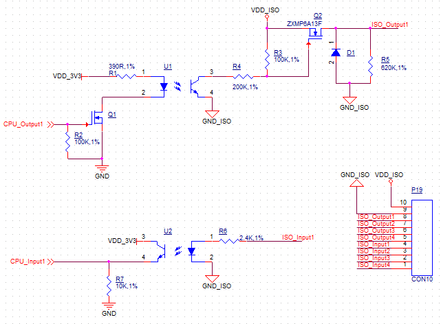
Isolated GPIO reduced schematic
{kind=link}
GPIO Connector
GPIO Connector Pin Definition: |
||
|---|---|---|
Pin Number |
Definition |
Description |
Pin 10 |
VDD_ISO |
Isolated Power +5V ~ +24V Input |
Pin 9 |
GND_ISO |
Isolated Ground |
Pin 8 |
OUT1 |
Isolated Output 1 |
Pin 7 |
OUT2 |
Isolated Output 2 |
Pin 6 |
OUT3 |
Isolated Output 3 |
Pin 5 |
OUT4 |
Isolated Output 4 |
Pin 4 |
IN1 |
Isolated Input 1 |
Pin 3 |
IN2 |
Isolated Input 2 |
Pin 2 |
IN3 |
Isolated Input 3 |
Pin 1 |
IN4 |
Isolated Input 4 |
USB Connectors¶
There are 2 x USB 2.0 Host, 1 x USB OTG onboard, as shown in the figure below.
{kind=link}
USB HOST Connectors
Attention
1. These two USB host connectors can drive 500mA for each channel at most.
2. These two USB host connectors, Zigbee and 4G/LTE come from the same USB HUB.
3. When you connect this product to the HOST PC through the Type-C port, the USB HUB will be disabled. As a result, the two USB host connectors, Zigbee and 4G/LTE will not work.
The product has one USB Type-C OTG connector that works as a slave by default. You can use it to establish a connection with the host PC and for downloading the system to the eMMC of CM4 module.
{kind=link}
USB Type-C OTG Connector
Warning
Be careful not to touch surrounding electronic components accidentally while plugging in USB devices into the embedded Industrial PC version.
Remember to unplug the Type-C cable after flashing OS, otherwise the USB hosts won’t work.
LAN¶
LAN (RJ45) connector provides Ethernet connectivity over standardized Ethernet cables as shown in the figure below. The integrated Ethernet interface supports up to 1 Gbps data throughput. These Giga LAN signals come from the CM4 module directly.
{kind=link}
RJ45 LAN Connector
Note
Use CAT5 or better cables to achieve full data throughput over maximum distance defined by the 1000BASE-T standard (100m).
WiFi & BT Module¶
The default EPC/PPC-CM4-070 without the CM4 does not include a Wi-Fi/BT module.
If you include a CM4 that has the Wi-Fi/BT module, the product will have Wi-Fi/BT feature.
The enclosed (CS10600RA4070P) variant of the product also includes an SMA connector for an external WiFi/BT antenna, as illustrated in the figure below.
{kind=link}
WiFi+BT Antenna
Attention
The product does not come shipped with the Wi-Fi/BT module by default.
3G/4G/LTE Module¶
The EPC/PPC-CM4-070 industrial Pi PC is equipped with a mini-PCIe connector that can connect to a 3G/4G/LTE module. The customer will also need a SIM Card Holder and a 3G/4G/LTE antenna to ensure 3G/4G/LTE works on the EPC/PPC-CM4-070. SIM card does NOT support hot plug. Power off before inserting or removing SIM card.

SIM Card Direction
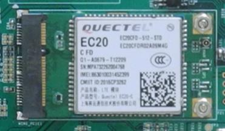
Figure 930: 3G/4G/LTE Module¶
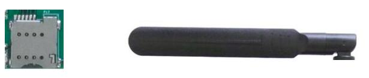
Figure 931: SIM Card Holder and 3G/4G/LTE Antenna¶
Attention
The product does not come shipped with the 3G/4G/LTE module by default. If you need to use 3G/4G/LTE, you can contact us when placing an order, we can install the necessary hardware for you.
Zigbee Module¶
The EPC/PPC-CM4-070 industrial Pi PC supports an onboard Zigbee module. The Zigbee controller is TI CC2531, and the Raspberry Pi forum supports it.
For CS10600RA4070P, there is a connector on the backside of the case that you can use to connect the external Zigbee antenna, as described in the figure below. If you need to use WiFi/BT and Zigbee together, we can customized the case and add another SMA connector for you, usually across the rear to the opposite of the current SMA.
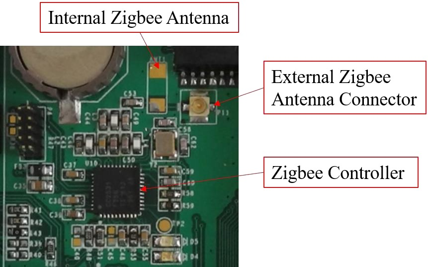
Figure 932: Zigbee controller¶
Zigbee Antenna
Attention
The product does not come with the Zigbee module by default.
Camera Connector¶
The EPC/PPC-CM4-070 industrial Pi PC has a 15 Pin Camera Connector, as shown in the figure below. The camera signals come from CAM1. The table below gives details about the definition of every Pin.
{kind=link}
Camera Connector
Camera Connector Pin Definition: |
||
|---|---|---|
Pin Number |
Definition |
Description |
Pin 1 |
GND |
Power Ground |
Pin 2 |
CAM1_DN0 |
CAM1_DN0 |
Pin 3 |
CAM1_DP0 |
CAM1_DP0 |
Pin 4 |
GND |
Power Ground |
Pin 5 |
CAM1_DN1 |
CAM1_DN1 |
Pin 6 |
CAM1_DP1 |
CAM1_DP1 |
Pin 7 |
GND |
Power Ground |
Pin 8 |
CAM1_CN |
CAM1 Clock signal Negative |
Pin 9 |
CAM1_CP |
CAM1 Clock signal Positive |
Pin 10 |
GND |
Power Ground |
Pin 11 |
CAM GPIO |
CAM GPIO, use for disable camera power and module |
Pin 12 |
NC |
Not connected |
Pin 13 |
SCL0 |
CPU I2C SCL0 signal |
Pin 14 |
SDA0 |
CPU I2C SDA0 signal |
Pin 15 |
+3.3V |
System +3.3V Power Output, No more than 500mA Current output |
Attention
The camera is not mounted by default.
TF Card Slot¶
The EPC/PPC-CM4-070 industrial Pi PC features 2 x TF Card (micro SD) slot. A slot can address up to 128GB of memory.
{kind=link}
TF (micro SD) Card Slot
Attention
The SD0 is used only for the Lite version of Compute Module 4 that has no internal eMMC. If you use CM4 with eMMC, this SD0 will be disabled. The SD1 is used for storage extension, it can’t be used for system boot-up.
This storage extension SD uses the same pins as WiFi on CM4. SD storage and WiFi can’t be used at the same time.
The product does not come shipped with the TF card by default.
Audio Connectors¶
The EPC/PPC-CM4-070 industrial Pi PC features some audio peripherals. It has 1 x 3.5mm audio output jack.
Also, the EPC/PPC-CM4-070 industrial Pi PC has a miniature 2W internal speaker for audio reproduction, as well as a small buzzer for alarm/notification sounds.
{kind=link}
Audio Connector (enclosed PC version)
Attention
By plugging in the headphone cable, the internal speaker will be disabled automatically.
{kind=link}
Mounting Procedure¶
The EPC/PPC-CM4-070 industrial Pi PC can be mounted with 4 x M4 screws, enabling simplified installation onto any standard mounting fixture.
CS10600RA4070E¶
You can mount CS10600RA4070E with the Embedded mounting method, as shown in the figure below.
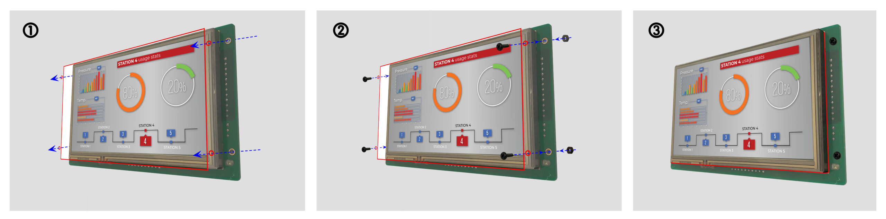
Figure 933: Embedded mounting¶
CS10600RA4070P¶
You can mount CS10600RA4070P with the Vesa (75 x 75mm) and Panel mounting methods, as shown on the figure below.
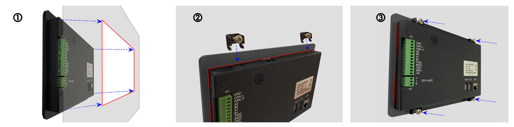
Figure 934: Panel mounting¶
Attention
Please make sure the display is not exposed to high pressure when mounting into an enclosure.
You can find detailed information about mounting in the Mount IPC Guide.
Mechanical Specifications¶
CS10600RA4070P¶
For CS10600RA4070P, the outer mechanical dimensions are 206 x 135 x 30mm (W x L x H).
CS10600RA4070E¶
For CS10600RA4070E, the outer mechanical dimensions are 190 x 108 x 28mm (W x L x H).
Please refer to the technical drawing in the figure below for details related to the specific product measurements.

Figure 935: CS10600RA4070E Technical Drawing¶
3D Model¶
EPC/PPC-CM4-070 3D model can be viewed in the online doc in a web browser, if you are reading from the PDF version, please visit the online doc.
- pdf-title
Raspberry Pi OS on CM4 User Manual
- pdf-subtitle
For CM4 Products
- pdf-filename
Raspberry Pi OS on CM4 User Manual
- pdf-type
ipc
Raspberry Pi OS¶
Raspberry Pi OS User Manual
This manual provides users with a quick start guide of Chipsee Raspberry Pi Computer (Abbreviated as RPC) running a Raspberry Pi OS (raspios-debian-buster, raspios-debian-bullseye). Through this manual, users can quickly understand the hardware resources; users can debug Raspberry Pi OS via serial, SSH, and VNC.
Revision |
Date |
Author |
Description |
|---|---|---|---|
V2.1 |
2021-04-28 |
Chipsee |
Revision |
V2.2 |
2023-11-09 |
Chipsee |
Update Supported Boards |
SUPPORTED BOARDS:
CS10600RA070
CS12800RA101
CS12720RA4050
CS10600RA4070
CS10600RA4070P-D
CS12800RA4101A
CS12800RA4101P
CS10768RA4121
CS19108RA4133
CS10768RA4150
CS19108RA4156
CS19108RA4215
CS19108RA4236
CSRA4BOX
PREBUILT IMAGES PACKAGE:
Below are the links to the prebuilt images for the Raspbian operating system on the various industrial Pi PC’s.
System Features
Note
Preparation¶
You will need to prepare the following items before you can start using the Prebuilt Images Package to re-flash the system.
Power Supply Unit (PSU) with the appropriate voltages, as follows:
These products: CS12720RA4050, CS10600RA070, CS10600RA4070, CS10600RA4070P-D, CSRA4BOX and CS12800RA101 requires a 6V to 36V power adapter. You must provide the power adapter since Chipsee does not ship these products with a power adapter.
The CS12800RA4101A RPC needs a 12V power adapter. Chipsee provides the power adapter.
The CS12800RA4101P, CS10768RA4121, CS19108RA4133, CS10768RA4150, CS19108RA4156, CS19108RA4215, CS19108RA4236 RPC need 12V to 36V power adapter.
Hardware Requirements¶
Chipsee Raspberry Pi®
PSU according to the instructions above
Mini-B USB OTG and MicroB USB Cable to download system images to CM3/CM3+/CM4 based IPC’s.
USB to RS232 serial cable for serial debugging the Chipsee Raspberry Pi® product.
TF Card (SD Card) to create a bootable storage for re-flashing the system. Use the prebuilt files link above to re-flash the system.
If you use CM3 Lite/CM3 Lite+/CM4 Lite, you also need one SD card, 16GB at least.
Software Requirements¶
Raspberry Pi OS Prebuilt Images Package (from the link above)
XShell or other terminal emulation software
Note
If you want to change the system, you need 7zip, a Prebuilt image, balenaEtcher, and rpiboot.
You can use Xshell or other terminal emulation software to debug Chipsee Raspberry Pi products in Windows.
You can use VNC-Viewer to control Chipsee Raspberry Pi products over Ethernet.
Note
In this documentation, all the commands are executed with root user privileges.
Debug¶
In this document, we use Xshell to debug the Chipsee Raspberry Pi products. You can also use other tools such as Putty or another terminal emulation software.
Serial Debug¶
The RS232_0 is configured as debug console by default on all Chipsee Raspberry Pi products. You can use it to debug directly, and the default user and password is [ pi / raspberry ]. Use the session properties as shown on the figure below.
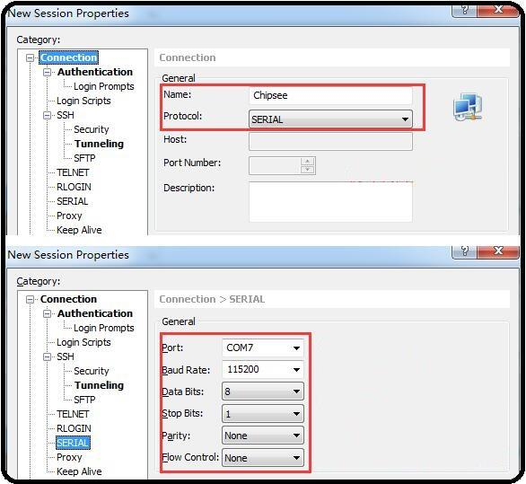
Figure 936: Session Properties¶
If you need to change the debug serial to normal serial, follow these steps:
Open and edit /boot/cmdline.txt file.
In the file, remove the line console=ttyAMA0, 115200. Save and close file.
Reboot the RPC.
SSH Debug¶
To perform SSH debugging on the Chipsee Raspberry Pi® product, you must first connect the product to the Internet.
Continue the debugging by follow these steps:
Get the IP address of the Chipsee Raspberry Pi® product.
- Enable the SSH feature in the Chipsee Raspberry Pi® product by running the following command in debug console:
$ sudo raspi-config Interfacing Options -> SSH -> Yes
- If you don’t have a debug console, you can also use the GUI feature to enable SSH.
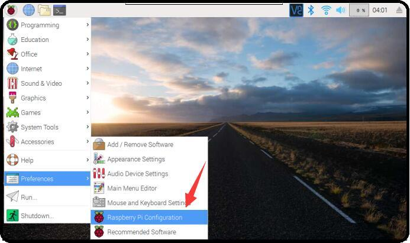
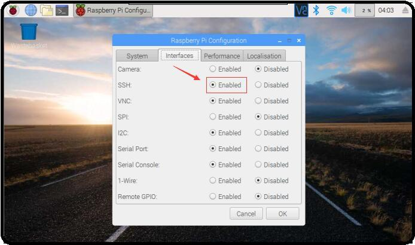
Figure 937: Enabling SSH (GUI)¶
Open and configure XShell or use ssh tool in the PC directly
- In XShell, add a new session and set it as shown on the figure below.
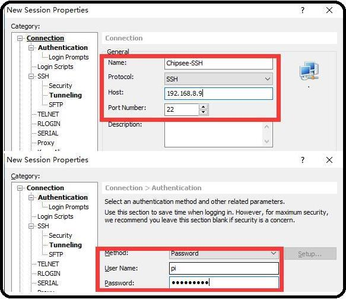
Figure 938: SSH Setting on Xshell¶
- Now we can perform SSH debugging using XShell
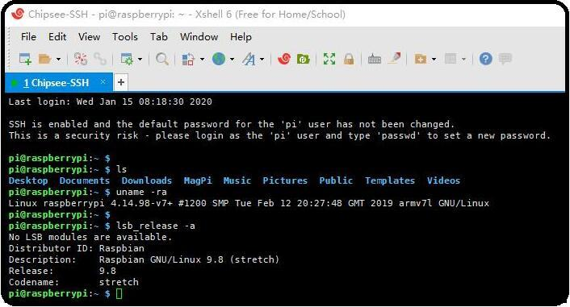
Figure 939: SSH Debug¶
VNC Debug¶
You can use VNC-Viewer in Windows to control Chipsee Raspberry Pi product over Ethernet.
Continue the debugging by follow these steps:
- Enable the VNC feature in the Chipsee Raspberry Pi® product by running the following command in debug console:
$ sudo raspi-config Interfacing Options -> VNC -> Yes
- If you don’t have a debug console, you can also use the GUI feature to enable VNC.

Figure 940: Enabling VNC (GUI)¶
Downloading images¶
Boot Switch Configuration¶
Chipsee RPC supports booting from an integrated eMMC or an external TF Card (also known as the micro SD card).
Note
CS12800RA4101A and CS12800RA4101P only supports eMMC boot
The Compute Module (CM) version will determine the boot modes your product supports.
If you use CM with eMMC, you can only use eMMC boot. If you use CM Lite which has no eMMC, you can only use SD boot.
To boot from the SD Card, you must place the SD Card in SD0 slot. You can use the SD1 slot as external storage.
For CS10600RA070, CS12800RA101, and CS10600RA4070 products, you can download a new system to eMMC by: configuring the boot switch to USB position, inserting Mini-B USB cable, and then power the board. This will enable eMMC to work as a USB storage.
After the eMMC flash, you need to configure the boot switch to the eMMC position again.
If you need to use SD boot, you should configure the boot switch to the eMMC position.
For the CS12800RA4101A product, you can download a new system to eMMC by: inserting a Micro-B USB cable, pressing the VOL+ button, and then power the board to enable eMMC to work as a USB storage. If you use C111 Version, you should press Boot Mode button.
For the CS12800RA4101P product, you can download a new system to eMMC by: inserting a Micro-B USB cable, pressing the Boot DIP button, and then power the board to enable eMMC to work as a USB storage.
The next sections explain in detail the steps in downloading a new system to eMMC.
Prebuilt image¶
Chipsee Raspberry Pi products use the Raspberry Pi official system as a base and add some modules and drivers. You can get the driver and latest image by referring to https://github.com/Chipsee/industrial-pi#latest-system-images.
If you’re not using balenaEtcher, you’ll need to unzip the .img.xz file and get the image file (.img) to write to your SD card.
Writing images to the SD Card¶
Before you start, don’t forget to check your SD card size (at least 16GB).
You will need to use an image writing tool to install the downloaded image on your SD card.
Using balenaEtcher Tool
balenaEtcher is a graphical SD card writing tool that works on Mac OS, Linux and Windows, and is the easiest option for most users.
balenaEtcher also supports writing images directly from the .img.xz file, without any unzipping required.
To write your image with balenaEtcher, follow these steps:
Download and install the latest version of balenaEtcher.
Connect an SD card reader with the SD card inside.
Open balenaEtcher and select from your hard drive the Raspberry Pi® .img.xz file you want to write to the SD card.
Select the SD card you want to write your image to.
Review your selections and click ‘Flash!’ to begin writing data to the SD card.
Note
For Linux users, zenity might need to be installed on your machine for balenaEtcher to be able to write the image on your SD card.
Note
The image supports Chipsee all Industrial-Pi products but AIO-CM4-156, you should refer to the guide for your product. You should wait 2 ~ 5 minutes after flashed system as it needs time to detect the product to complete initial work. If a sound is heard, don’t worry, just wait it to boot.
Writing images to the eMMC¶
Before you start, don’t forget to check your eMMC size, and select one image. You also need to install rpiboot to enable eMMC to work as one USB storage in your PC.
Under Windows, an installer is available to install the required drivers and boot tool automatically.|br|
For those who just want to enable the Compute Module eMMC as a mass storage device under Windows, the stand-alone installer is the recommended option.
The write images to the eMMC, follow these steps:
Download and run the Windows installer rpitools to install the drivers and boot tool.
For CS10600RA070, CS12800RA101, and CS10600RA4070 products, plug your host PC Mini-B USB into the USB Downloader port, making sure the boot switch is set to the USB position.
For CS12800RA4101A product, plug your host PC Micro-B USB into the USB Slave port (can be also called USB Download Port), press and hold the VOL+ button, if you use C111 Version, press Boot Mode button.
For CS12800RA4101P product, plug your host PC Micro-B USB into the USB Slave port (can be also called USB Download Port), press and hold the Boot DIP button.
Power ON the board. Windows should now find the hardware and install the driver. For CS12800RA4101A and CS12800RA4101P, you can release the button now.
- Once the driver installation is complete, run the RPiBoot.exe tool that was previously installed. You can run RPiBoot.exe in Windows PowerShell, as shown on the figure below.
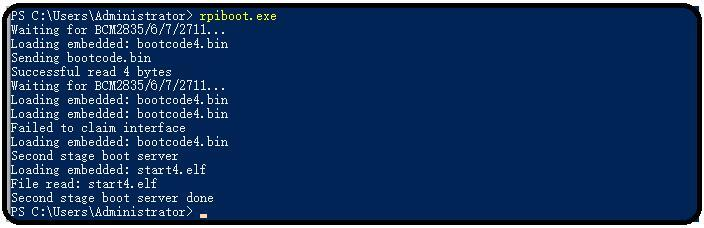
Figure 944: RPIboot tool¶
After a few seconds, the Compute Module eMMC will pop up under Windows as a disk (USB mass storage device).
Refer to Writing images to the SD Card to flash system to eMMC (like the SD card in Windows).
If process completes, power OFF the board and ensure the boot switch is set to eMMC position. Power ON to use the new system.
For CS12800RA4101A, ignore repositioning the boot switch, a reboot will be ok.
To learn more, visit the following link: https://www.raspberrypi.org/documentation/hardware/computemodule/cm-emmc-flashing.md
Note
The image supports Chipsee all Industrial-Pi products but AIO-CM4-156, you should refer to the guide for your product. You should wait 2 ~ 5 minutes after flashed system as it needs time to detect the product to complete initial work. If a sound is heard, don’t worry, just wait it to boot.
System Resource¶
SD Card/USB¶
SD Card is for external storage and needs to be placed in the SD1 port. The SD0 port is used by boot.|br| SD Card and USB Storage support hot plug. They will be automatically mounted on /media/pi/. For CS12800RA4101A and CS12800RA4101P, there is only one SD slot.
Serial Port¶
Chipsee Raspberry Pi® boards support RS232 and RS485. Check the table below to know more about the serial port on different boards.
Ports |
Name |
Node |
Protocol |
|---|---|---|---|
1 |
RS232_0 |
/dev/ttyAMA0 |
RS232 |
2 |
RS232_1/RS485_1 |
/dev/S0 |
RS232/RS485 |
Note
RS232_1/RS485_1 uses the same UART pins from the CPU, so they use the same device node. You can only use one at a time. RS485 signal has been mounted on the 120Ω Matched Resistor.
There is one GPIO that is used by RS485. You can control it to enable and disable RS485 to send and receive. Check the tables below.
GPIO |
Initial |
Control |
Function |
|---|---|---|---|
GPIO34 |
$ echo 34 > /sys/class/gpio/export $ echo out > /sys/class/gpio/gpio34/direction |
$ echo 1 > /dev/rs485con |
Enable send |
Disable receive |
|||
$ ln -s /sys/class/gpio/gpio34/value /dev/rs485con |
$ echo 0 > /dev/rs485con |
Enable receive |
|
Disable send |
Ports |
Name |
Node |
Protocol |
|---|---|---|---|
1 |
CPU_RS232_0 |
/dev/ttyAMA0 |
RS232 |
2 |
CPU_RS232_1 |
/dev/ttyS0 |
RS232 |
3 |
RS232_1 |
/dev/ttyUSB0 |
RS232 |
4 |
RS232_2 |
/dev/ttyUSB1 |
RS232 |
5 |
RS485_3 |
/dev/ttyUSB2 |
RS485 |
6 |
RS485_4 |
/dev/ttyUSB3 |
RS485 |
Ports |
Name |
Node |
Protocol |
|---|---|---|---|
1 |
RS232_0 |
/dev/ttyAMA0 |
RS232 |
2 |
RS232_2 |
/dev/ttyAMA1 |
RS232 |
3 |
RS232_3 |
/dev/ttyAMA2 |
|
4 |
RS485_3 |
/dev/ttyAMA2 |
RS485 |
5 |
RS232_5 |
/dev/ttyAMA3 |
|
6 |
RS485_5 |
/dev/ttyAMA3 |
RS485 |
- 4(1,2)
This channel does not output data by default. You can customize the channel to RS232 with port 4 and port 6 disabled.
Ports |
Name |
Node |
Protocol |
|---|---|---|---|
1 |
RS232_0 |
/dev/ttyAMA0 |
RS232 |
2 |
RS232_1 |
/dev/ttyAMA1 |
RS232 |
3 |
RS485_2 |
/dev/ttyAMA2 |
RS485 |
Ports |
Name |
Node |
Protocol |
|---|---|---|---|
1 |
RS232_0 |
/dev/ttyAMA0 |
RS232 |
2 |
RS232_2 |
/dev/ttyAMA1 |
RS232 |
3 |
RS232_3 |
/dev/ttyAMA2 |
RS485 |
4 |
RS232_5 |
/dev/ttyAMA3 |
RS485 |
You can install cutecom to test the serial port:
$ sudo apt-get install cutecom
Only root user and use the serial port:
$ sudo cutecom
GPIO¶
There are 8 GPIOs, 4 Output, and 4 Input, they are all isolated. You can control the output or input pin voltage by feeding the VDD_ISO suite voltage. The pin voltage should be from 5V to 24V. Refer to the tables below for a detailed port definition:
Function |
Device Node |
|---|---|
IN4 |
/dev/chipsee-gpio8 |
IN3 |
/dev/chipsee-gpio7 |
IN2 |
/dev/chipsee-gpio6 |
IN1 |
/dev/chipsee-gpio5 |
OUT4 |
/dev/chipsee-gpio4 |
OUT3 |
/dev/chipsee-gpio3 |
OUT2 |
/dev/chipsee-gpio2 |
OUT1 |
/dev/chipsee-gpio1 |
Isolated GND |
NC |
Isolated VDD(5V-24V) |
NC |
- Control OUT1 by setting it high or low
$ echo 1 > /dev/chipsee-gpio1 // set OUT1 high $ echo 0 > /dev/chipsee-gpio1 // set OUT1 low
- Get IN1 value
$ cat /dev/chipsee-gpio5 // value 1 indicate high, value 0 indicate low
Relay¶
There is one Relay on CS12800RA4101A. For a detailed port definition, please refer to the table below.
Ports |
Name |
Node |
Protocol |
|---|---|---|---|
8 |
Relay_NO |
GPIO17 |
Normal Open |
9 |
Relay_COM |
GPIO17 |
GND |
10 |
Relay_NC |
GPIO17 |
Normal Close |
- Initialize GPIO17 to output
$ echo 17 > /sys/class/gpio/export $ echo out > /sys/class/gpio/gpio17/direction
- Enable Relay NO short-circuit Relay COM
$ echo 1 > /sys/class/gpio/gpio17/value
- Enable Relay NC short-circuit Relay COM
$ echo 0 > /sys/class/gpio/gpio17/value
BUZZER¶
The Chipsee Raspberry Pi boards have one buzzer. We have created one symbol link to /dev/buzzer. You can control it as follows:
$ echo 1 > /dev/buzzer //enable buzzer
$ echo 0 > /dev/buzzer // disable buzzer
Backlight¶
We use one PWM to control the backlight for Chipsee Raspberry Pi boards, You can use follow commands to control the backlight.
- Get the supported max brightness:
$ cat /sys/class/backlight/pwm-backlight/max_brightness
- Set brightness:
$ echo 50 > /sys/class/backlight/pwm-backlight/brightness
4G¶
Note
SIM card does NOT support hot plug. Power off before inserting/removing SIM card.
{kind=link}
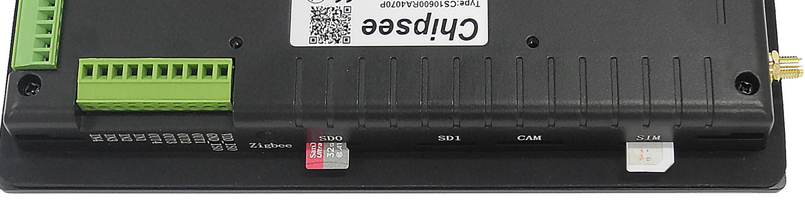
SIM Card Direction (7 inch product)
{kind=link}
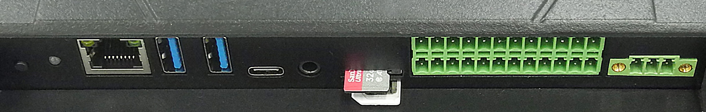
SIM Card Direction (10 inch and above products)
- You can use 4G on Chipsee Raspberry Pi products. If the 4G module is Quectel EC20, you can use linux-ppp-scripts to connect to internet.
$ sudo apt update $ sudo apt install ppp $ sudo ifconfig wwan0 down $ cd linux-ppp-scripts/ $ sudo ./quectel-pppd.sh <Serial Port> <APN> <username> <password> For example, $ sudo ./quectel-pppd.sh /dev/ttyUSB3 3gnet test test or no username and password $ sudo ./quectel-pppd.sh /dev/ttyUSB3 3gnet disconnect 4g $ cd linux-ppp-scripts/ $ ./quectel-ppp-kill
- If you use EC20 with GPS function, you can enable and get data in the following way.
Open one terminal to catch data: cat /dev/ttyUSB1
- If you use EC20 with GPS function, you can enable and get data in the following way.
- Open another terminal to config and enable:
$ microcom –s 9600 /dev/ttyUSB2 AT+QGPSCFG=”gpsnmeatype”,1 AT+QGPS=1 // enable GPS, wait some minutes, you can get date from fist terminal. AT+QGPSEND // disable GPS
Don’t forget to use one GPS ANT.
CAN Bus¶
There is one channel CAN bus on CS12800RA101/CS10600RA4070/CS12800RA4101P. You can install can-utils and use them to test CAN. But you must add one 120Ω resistor between CAN_H and CAN_L on one of the two Boards, as shown on the figure below.
Note
The Chipsee IPC does not mount the 120Ω matched resistor on all CAN signals by default.
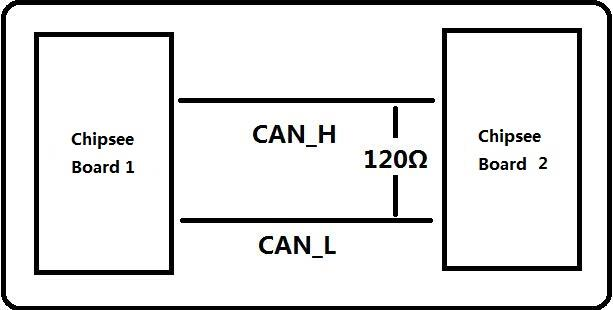
Figure 945: Connecting CAN¶
Here are a few examples to test CAN by using CAN units
- Install can-utils
$ sudo apt install can-utils
- Set the bit-rate to 50Kbits/sec with triple sampling using the following command (use ROOT user):
$ sudo ip link set can0 type can bitrate 50000 triple-sampling on
- Bring up the device using the command:
$ sudo ip link set can0 up
- Transfer packets
Transmit 8 bytes with standard packet id number as 0x10
$ sudo cansend can0 -i 0x10 0x11 0x22 0x33 0x44 0x55 0x66 0x77 0x88
Transmit 8 bytes with extended packet id number as 0x800
$ sudo cansend can0 -i 0x800 0x11 0x22 0x33 0x44 0x55 0x66 0x77 0x88 - e
Transmit 20 8 bytes with extended packet id number as 0xFFFFF
$ sudo cansend can0 -i 0xFFFFF 0x11 0x22 0x33 0x44 0x55 0x66 0x77 0x88 -e --loop=20
- Receive data from CAN bus
$ sudo candump can0
- Bring down the device
$ sudo ip link set can0 down
Wi-Fi¶
The Chipsee Raspberry Pi boards support RTL8723BU/RTL8723DU chip Wi-Fi. The CS10600RA070/CS12800RA101 have an onboard RTL8723BU Wi-Fi chip. The CS10600RA4070/CS12800RA4101A/CS12800RA4101P have no onboard Wi-Fi by default so you can use the USB Wi-Fi dongle to enable the Wi-Fi.
Zigbee¶
The CS10600RA4070/CS12800RA4101A/CS12800RA4101P boards have an onboard ZigBee chip CC2531. Its device node in the system is /dev/ttyACM0. We use zigbee2mqtt project firmware by default. Check the following link to learn more about this project: Zigbee2mqtt
Note
The Zigbee module is not mounted by default.
Camera¶
The camera port CAM is compatible with Raspberry pi. Please refer to the following link to learn how to attach a camera: https://www.raspberrypi.org/documentation/hardware/computemodule/cmio-camera.md
Chipsee-init shell¶
We use one chipsee-init.sh as an initial shell which is placed in /opt/chipsee/chipsee-init.sh.
We initialize the GPIO/Buzzer and other configs in it. If you want to change it, please be careful.
Do a backup first before you modify anything. This script will generaged one log file which located on /var/log/chipsee-init.sh.log.
If your device has booting issues, you can send Chipsee® the file to help you find out what happened.
Disclaimer¶
This document is provided strictly for informational purposes. Its contents are subject to change without notice. Chipsee assumes no responsibility for any errors that may occur in this document. Furthermore, Chipsee reserves the right to alter the hardware, software, and/or specifications set forth herein at any time without prior notice and undertakes no obligation to update the information contained in this document.
While every effort has been made to ensure the accuracy of the information contained herein, this document is not guaranteed to be error-free. Further, it does not offer any warranties or conditions, whether expressed orally or implied in law, including implied warranties and conditions of merchantability or fitness for a particular purpose. We specifically disclaim any liability with respect to this document, and no contractual obligations are formed either directly or indirectly by this document.
Despite our best efforts to maintain the accuracy of the information in this document, we assume no responsibility for errors or omissions, nor for damages resulting from the use of the information herein. Please note that Chipsee products are not authorized for use as critical components in life support devices or systems.
Technical Support¶
If you encounter any difficulties or have questions related to this document, we encourage you to refer to our other documentation for potential solutions. If you cannot find the solution you’re looking for, feel free to contact us. Please email Chipsee Technical Support at support@chipsee.com, providing all relevant information. We value your queries and suggestions and are committed to providing you with the assistance you require.